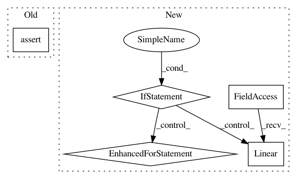

939512c36bf89a9ddb02b01818018e4fbfb9bef1,chainerrl/q_functions/state_action_q_functions.py,FCSAQFunction,__init__,#FCSAQFunction#Any#Any#Any#Any#,46
Before Change
self.n_hidden_channels = n_hidden_channels
layers = []
assert self.n_hidden_layers >= 1
layers.append(
L.Linear(self.n_input_channels, self.n_hidden_channels))
for i in range(self.n_hidden_layers - 1):
layers.append(
After Change
class SingleModelStateActionQFunction(
chainer.Chain, StateActionQFunction, RecurrentChainMixin):
Q-function with discrete actions.
Args:
model (chainer.Link):
Link that is callable and outputs action values.
def __init__(self, model):
super().__init__(model=model)
def __call__(self, x, a, test=False):
h = self.model(x, a, test=test)
return h
class FCSAQFunction(chainer.ChainList, StateActionQFunction):
Fully-connected (s,a)-input continuous Q-function.
Args:
n_dim_obs: number of dimensions of observation space
n_dim_action: number of dimensions of action space
n_hidden_channels: number of hidden channels
n_hidden_layers: number of hidden layers
In pattern: SUPERPATTERN
Frequency: 3
Non-data size: 5
Instances
Project Name: chainer/chainerrl
Commit Name: 939512c36bf89a9ddb02b01818018e4fbfb9bef1
Time: 2017-02-22
Author: muupan@gmail.com
File Name: chainerrl/q_functions/state_action_q_functions.py
Class Name: FCSAQFunction
Method Name: __init__
Project Name: chainer/chainerrl
Commit Name: 7ff7b4e5919de9fda319dd514003c5af1832c10d
Time: 2016-04-30
Author: muupan@gmail.com
File Name: policy.py
Class Name: FCSoftmaxPolicy
Method Name: __init__
Project Name: chainer/chainerrl
Commit Name: 06bade5c5fc40c0241ae5960b6a0dd1766e7732b
Time: 2017-02-28
Author: muupan@gmail.com
File Name: chainerrl/q_functions/state_action_q_functions.py
Class Name: FCSAQFunction
Method Name: __init__